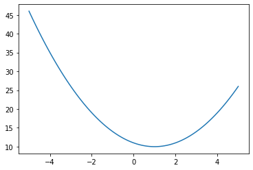
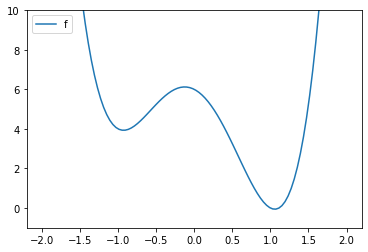
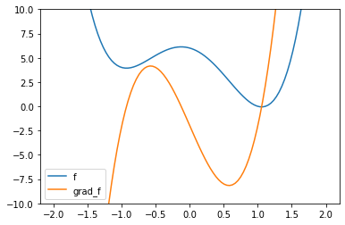
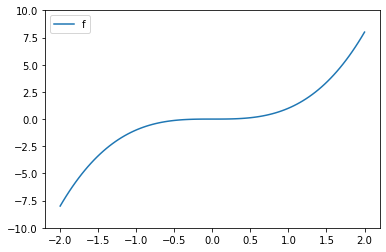
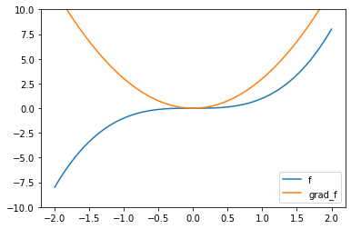
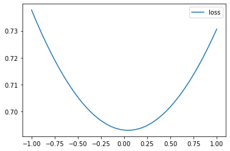
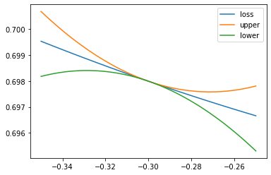
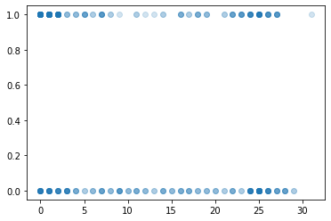
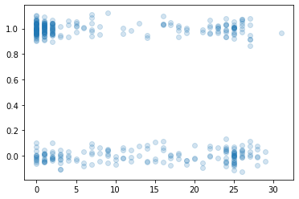
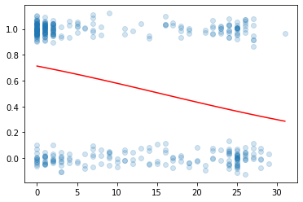

\(\newcommand{\bSigma}{\boldsymbol{\Sigma}}\) \(\newcommand{\bmu}{\boldsymbol{\mu}}\) \(\newcommand{\bsigma}{\boldsymbol{\sigma}}\)
6.4. Gradient descent and its convergence analysis#
We consider a natural approach for solving optimization problems numerically: a class of algorithms known as descent methods.
Let \(f : \mathbb{R}^d \to \mathbb{R}\) be continuously differentiable. We restrict ourselves to unconstrained minimization problems of the form
Ideally one would like to identify a global minimizer of \(f\). A naive approach might be to evaluate \(f\) at a large number of points \(\mathbf{x}\), say on a dense grid. However, even if we were satisfied with an approximate solution and limited ourselves to a bounded subset of the domain of \(f\), this type of exhaustive search is wasteful and impractical in large dimension \(d\), as the number of points interrogated grows exponentially with \(d\).
A less naive approach might be to find all stationary points of \(f\), that is, those \(\mathbf{x}\) such that \(\nabla f(\mathbf{x}) = \mathbf{0}\). And then choose an \(\mathbf{x}\) among them that produces the smallest value of \(f(\mathbf{x})\). This indeed works in many problems, like the following example we have encountered previously.
EXAMPLE: (Least Squares) Consider again the least-squares problem
where \(A \in \mathbb{R}^{n \times d}\) has full column rank and \(\mathbf{b} \in \mathbb{R}^n\). In particular, \(d \leq n\). We saw in a previous example that the objective function is a quadratic function
where \(P = 2 A^T A\) is symmetric, \(\mathbf{q} = - 2 A^T \mathbf{b}\), and \(r= \mathbf{b}^T \mathbf{b} = \|\mathbf{b}\|^2\). We also showed that \(f\) is \(\mu\)-strongly convex where \(\mu > 0\) is the smallest eigenvalue of \(2 A^T A\). So there is a unique global minimizer.
By a previous calculation,
So the stationary points satisfy
which you may recognize as the normal equations for the least-squares problem. \(\lhd\)
Unfortunately, identifying stationary points often leads to systems of nonlinear equations that do not have explicit solutions. Hence we resort to a different approach.
6.4.1. Gradient descent#
In gradient descent, we attempt to find smaller values of \(f\) by successively following directions in which \(f\) decreases locally. As we have seen in the proof of the First-Order Necessary Condition, \(- \nabla f\) provides such a direction. In fact, it is the direction of steepest descent in the following sense.
Recall from the Descent Direction and Directional Derivative Lemma that \(\mathbf{v}\) is a descent direction at \(\mathbf{x}_0\) if the directional derivative of \(f\) at \(\mathbf{x}_0\) in the direction \(\mathbf{v}\) is negative.
LEMMA (Steepest Descent) Let \(f : \mathbb{R}^d \to \mathbb{R}\) be continuously differentiable at \(\mathbf{x}_0\). For any unit vector \(\mathbf{v} \in \mathbb{R}^d\),
where
\(\flat\)
Proof idea: This is an immediate application of Cauchy-Schwarz.
Proof: By Cauchy-Schwarz, since \(\mathbf{v}\) has unit norm,
Or, put differently,
On the other hand, by the choice of \(\mathbf{v}^*\),
The last two displays combined give the result. \(\square\)
At each iteration of gradient descent, we take a step in the direction of the negative of the gradient, that is,
for a sequence of step sizes \(\alpha_t > 0\). Choosing the right step size (also known as steplength or learning rate) is a large subject in itself. We will only consider the case of fixed step size here.
LEARNING BY CHATTING Ask your favorite AI chatbot about the different approaches for selecting a step size in gradient descent methods. \(\ddagger\)
In general, we will not be able to guarantee that a global minimizer is reached in the limit, even if one exists. Our goal for now is more modest: to find a point where the gradient of \(f\) approximately vanishes.
NUMERICAL CORNER: We implement gradient descent in Python. We assume that a function f and its gradient grad_f are provided. We first code the basic steepest descent step with a step size \(\alpha =\) alpha.
def desc_update(grad_f, x, alpha):
return x - alpha*grad_f(x)
def gd(f, grad_f, x0, alpha=1e-3, niters=int(1e6)):
xk = x0
for _ in range(niters):
xk = desc_update(grad_f, xk, alpha)
return xk, f(xk)
We illustrate on a simple example.
def f(x):
return (x-1)**2 + 10
Show code cell source
xgrid = np.linspace(-5,5,100)
plt.plot(xgrid, f(xgrid))
plt.show()

def grad_f(x):
return 2*(x-1)
gd(f, grad_f, 0)
(0.9999999999999722, 10.0)
We found a global minmizer in this case.
The next example shows that a different local minimizer may be reached depending on the starting point.
def f(x):
return 4 * (x-1)**2 * (x+1)**2 - 2*(x-1)
Show code cell source
xgrid = np.linspace(-2,2,100)
plt.plot(xgrid, f(xgrid), label='f')
plt.ylim((-1,10))
plt.legend()
plt.show()

CLICK ON TARGET: If we start gradient descent from \(-2\), where will it converge? \(\ddagger\)
def grad_f(x):
return 8 * (x-1) * (x+1)**2 + 8 * (x-1)**2 * (x+1) - 2
Show code cell source
xgrid = np.linspace(-2,2,100)
plt.plot(xgrid, f(xgrid), label='f')
plt.plot(xgrid, grad_f(xgrid), label='grad_f')
plt.ylim((-10,10))
plt.legend()
plt.show()

gd(f, grad_f, 0)
(1.057453770738375, -0.0590145651028224)
gd(f, grad_f, -2)
(-0.9304029265558538, 3.933005966859003)
TRY IT! In this last example, does changing the step size affect the outcome? \(\ddagger\)
In the final example, we end up at a stationary point that is not a local minimizer. Here both the first and second derivatives are zero. This is known as a saddle point.
def f(x):
return x**3
Show code cell source
xgrid = np.linspace(-2,2,100)
plt.plot(xgrid, f(xgrid), label='f')
plt.ylim((-10,10))
plt.legend()
plt.show()

def grad_f(x):
return 3 * x**2
Show code cell source
xgrid = np.linspace(-2,2,100)
plt.plot(xgrid, f(xgrid), label='f')
plt.plot(xgrid, grad_f(xgrid), label='grad_f')
plt.ylim((-10,10))
plt.legend()
plt.show()

gd(f, grad_f, 2)
(0.00033327488712690107, 3.701755838398568e-11)
gd(f, grad_f, -2, niters=100)
(-4.93350410883896, -120.0788396909241)
\(\unlhd\)
6.4.2. Convergence analysis#
In this section, we prove some results about the convergence of gradient descent. We start with the smooth case.
Smooth case Informally, a function is smooth if its gradient does not change too fast. The formal definition we will use here follows. We restrict ourselves to the twice continuously differentiable case.
DEFINITION (Smooth Function) Let \(f : \mathbb{R}^d \to \mathbb{R}\) be twice continuously differentiable. We say that \(f\) is \(L\)-smooth if
\(\natural\)
In the single-variable case, this reduces to \(- L \leq f''(x) \leq L\) for all \(x \in \mathbb{R}\). More generally, recall that
So the condition above is equivalent to
A different way to put this is that the second directional derivative satisfies
for all \(\mathbf{x} \in \mathbb{R}^d\) and all unit vectors \(\mathbf{v} \in \mathbb{R}^d\).
Combined with Taylor’s Theorem, this gives immediately the following.
LEMMA (Quadratic Bound for Smooth Functions) Let \(f : \mathbb{R}^d \to \mathbb{R}\) be twice continuously differentiable. Then \(f\) is \(L\)-smooth if and only if for all \(\mathbf{x}, \mathbf{y} \in \mathbb{R}^d\) it holds that
\(\flat\)
Proof idea: We apply the Taylor’s Theorem, then bound the second-order term.
Proof: By Taylor’s Theorem, for any \(\alpha > 0\) there is \(\xi_\alpha \in (0,1)\)
where \(\mathbf{p} = \mathbf{y} - \mathbf{x}\).
If \(f\) is \(L\)-smooth, then at \(\alpha = 1\) by the observation above
That implies the inequality in the statement.
On the other hand, if that inequality holds, by combining with the Taylor expansion above we get
where we used that \(\|\alpha \mathbf{p}\| = \alpha \|\mathbf{p}\|\) by homogeneity of the norm. Dividing by \(\alpha^2/2\), then taking \(\alpha \to 0\) and using the continuity of the Hessian gives
By the observation above again, that implies that \(f\) is \(L\)-smooth. \(\square\)
We show next that, in the smooth case, steepest descent with an appropriately chosen steplength produces a sequence of points whose objective values decrease and whose gradients vanish in the limit. We also give a quantitative convergence rate. Note that this result does not imply convergence to a local (or global) minimizer.
THEOREM (Convergence of Gradient Descent: Smooth Case) Suppose that \(f : \mathbb{R}^d \to \mathbb{R}\) is \(L\)-smooth and bounded from below, that is, there is \(\bar{f} > - \infty\) such that \(f(\mathbf{x}) \geq \bar{f}\), \(\forall \mathbf{x} \in \mathbb{R}^d\). Then gradient descent with step size \(\alpha_t = \alpha := 1/L\) started from any \(\mathbf{x}^0\) produces a sequence \(\mathbf{x}^t\), \(t=1,2,\ldots\) such that
and
Moreover, after \(S\) steps, there is a \(t\) in \(\{0,\ldots,S\}\) such that
\(\sharp\)
The assumption that a lower bound on \(f\) is known may seem far-fetched. But there are in fact many settings where this is natural. For instance, in the case of the least-squares problem, the objective function \(f\) is non-negative by definition and therefore we can take \(\bar{f} = 0\).
A different way to put the claim above regarding the convergence rate is the following. Take any \(\epsilon > 0\). If our goal is to find a point \(\mathbf{x}\) such that \(\|\nabla f(\mathbf{x})\|_2 \leq \epsilon\), then we are guaranteed to find one if we perform \(S\) steps such that
that is, after rearranging,
The heart of the proof is the following fundamental inequality. It also informs the choice of step size.
LEMMA (Descent Guarantee in the Smooth Case) Suppose that \(f : \mathbb{R}^d \to \mathbb{R}\) is \(L\)-smooth. For any \(\mathbf{x} \in \mathbb{R}^d\),
\(\flat\)
Proof idea (Descent Guarantee in the Smooth Case): Intuitively, the Quadratic Bound for Smooth Functions shows that \(f\) is well approximated by a quadratic function in a neighborhood of \(\mathbf{x}\) whose size depends on the smoothness parameter \(L\). Choosing a step that minimizes this approximation leads to a guaranteed improvement. The approach taken here is a special case of what is sometimes referred to as Majorize-Minimization (MM).
Proof (Descent Guarantee in the Smooth Case): By the Quadratic Bound for Smooth Functions, letting \(\mathbf{p} = - \nabla f(\mathbf{x})\)
The quadratic function in parentheses is convex and minimized at the stationary point \(\alpha\) satisfying
Taking \(\alpha = 1/L\), where \(-\alpha + \alpha^2 \frac{L}{2} = - \frac{1}{2L}\), and replacing in the inequality above gives
as claimed. \(\square\)
We return to the proof of the theorem.
Proof idea (Convergence of Gradient Descent: Smooth Case): We use a telescoping argument to write \(f(\mathbf{x}^S)\) as a sum of stepwise increments, each of which can be bounded by the previous lemma. Because \(f(\mathbf{x}^S)\) is bounded from below, it then follows that the gradients must vanish in the limit.
Proof (Convergence of Gradient Descent: Smooth Case): By the Descent Guarantee in the Smooth Case,
Furthermore, using a telescoping sum, we get
Rearranging and using \(f(\mathbf{x}^S) \geq \bar{f}\) leads to
We get the quantitative bound
as the minimum is necessarily less or equal than the average. Moreover, as \(S \to +\infty\), we must have \(\|\nabla f(\mathbf{x}^S)\|^2 \to 0\) by standard analytical arguments. That proves the claim. \(\square\)
Smooth and strongly convex case With stronger assumptions, we obtain stronger convergence results. One such assumption is strong convexity, which we defined in the previous section for twice continuously differentiable functions.
Recall the definition and compare with that of a smooth function.
DEFINITION (Strongly Convex Function) Let \(f : \mathbb{R}^d \to \mathbb{R}\) be twice continuously differentiable and let \(m > 0\). We say that \(f\) is \(m\)-strongly convex if
\(\natural\)
In the single-variable case, this reduces to \(f''(x) \geq m\) for all \(x \in \mathbb{R}\).
We prove a convergence result for smooth, strongly convex functions. We will show something stronger this time. We will control the value of \(f\) itself and obtain a much faster rate of convergence. If \(f\) is \(m\)-strongly convex and has a global minimizer \(\mathbf{x}^*\), then the global minimizer is unique and characterized by \(\nabla f(\mathbf{x}^*) = \mathbf{0}\). Strong convexity allows us to relate the value of the function at a point \(\mathbf{x}\) and the gradient of \(f\) at that point. This is proved in the following lemma, which is key to our convergence results.
LEMMA (Relating \(f\) and \(\nabla f\)) Let \(f : \mathbb{R}^d \to \mathbb{R}\) be twice continuously differentiable, \(m\)-strongly convex with a global minimizer at \(\mathbf{x}^*\). Then for any \(\mathbf{x} \in \mathbb{R}^d\)
\(\flat\)
Proof: By the Quadratic Bound for Strongly Convex Functions,
where on the second line we defined \(\mathbf{w} = \mathbf{x}^* - \mathbf{x}\). The right-hand side is a quadratic function in \(\mathbf{w}\) (for \(\mathbf{x}\) fixed), and on the third line we used our previous notation \(P\), \(\mathbf{q}\) and \(r\) for such a function. So the inequality is still valid if we replace \(\mathbf{w}\) with the global minimizer \(\mathbf{w}^*\) of that quadratic function.
The matrix \(P = m I_{d \times d}\) is positive definite. By a previous example, we know that the minimizer is achieved when the gradient \(\frac{1}{2}[P + P^T]\mathbf{w}^* + \mathbf{q} = \mathbf{0}\), which is equivalent to
So, replacing \(\mathbf{w}\) with \(\mathbf{w}^*\), we have the inequality
Rearranging gives the claim. \(\square\)
We can now state our convergence result.
THEOREM (Convergence of Gradient Descent: Strongly Convex Case) Suppose that \(f : \mathbb{R}^d \to \mathbb{R}\) is \(L\)-smooth and \(m\)-strongly convex with a global minimizer at \(\mathbf{x}^*\). Then gradient descent with step size \(\alpha = 1/L\) started from any \(\mathbf{x}^0\) produces a sequence \(\mathbf{x}^t\), \(t=1,2,\ldots\) such that
Moreover, after \(S\) steps, we have
\(\sharp\)
Observe that \(f(\mathbf{x}^S) - f(\mathbf{x}^*)\) decreases exponentially fast in \(S\). A related bound can be proved for \(\|\mathbf{x}^S - \mathbf{x}^*\|\).
Put differently, fix any \(\epsilon > 0\). If our goal is to find a point \(\mathbf{x}\) such that \(f(\mathbf{x}) - f(\mathbf{x}^*) \leq \epsilon\), then we are guaranteed to find one if we perform \(H\) steps such that
that is, after rearranging,
Proof idea (Convergence of Gradient Descent: Strongly Convex Case): We apply the Descent Guarantee for Smooth Functions together with the lemma above.
Proof (Convergence of Gradient Descent: Strongly Convex Case): By the Descent Guarantee for Smooth Functions together with the lemma above, we have for all \(t\)
Subtracting \(f(\mathbf{x}^*)\) on both sides gives
Recursing this is
and so on. That gives the claim. \(\square\)
NUMERICAL CORNER: We revisit our first simple single-variable example.
def f(x):
return (x-1)**2 + 10
Show code cell source
xgrid = np.linspace(-5,5,100)
plt.plot(xgrid, f(xgrid))
plt.show()
Recall that the first derivative is:
def grad_f(x):
return 2*(x-1)
So the second derivative is \(f''(x) = 2\). Hence, this \(f\) is \(L\)-smooth and \(m\)-strongly convex with \(L = m = 2\). The theory we developed suggests taking step size \(\alpha_t = \alpha = 1/L = 1/2\). It also implies that
We converge in one step! And that holds for any starting point \(x^0\).
Let’s try this!
gd(f, grad_f, 0, alpha=0.5, niters=1)
(1.0, 10.0)
Let’s try a different starting point.
gd(f, grad_f, 100, alpha=0.5, niters=1)
(1.0, 10.0)
\(\unlhd\)
6.4.3. Application to logistic regression#
We return to logistic regression, which we alluded to in the motivating example of this chapter.
The input data is of the form \(\{(\boldsymbol{\alpha}_i, b_i) : i=1,\ldots, n\}\) where \(\boldsymbol{\alpha}_i = (\alpha_{i,1}, \ldots, \alpha_{i,d}) \in \mathbb{R}^d\) are the features and \(b_i \in \{0,1\}\) is the label. As before we use a matrix representation: \(A \in \mathbb{R}^{n \times d}\) has rows \(\boldsymbol{\alpha}_i^T\), \(i = 1,\ldots, n\) and \(\mathbf{b} = (b_1, \ldots, b_n) \in \{0,1\}^n\).
Logistic model. We summarize the logistic regression approach. Our goal is to find a function of the features that approximates the probability of the label \(1\). For this purpose, we model the log-odds (or logit function) of the probability of label \(1\) as a linear function of the features \(\boldsymbol{\alpha} \in \mathbb{R}^d\)
where \(\mathbf{x} \in \mathbb{R}^d\) is the vector of coefficients (i.e., parameters). Inverting this expression gives
where the sigmoid function is
for \(z \in \mathbb{R}\).
We plot the sigmoid function.
def sigmoid(z):
return 1/(1+np.exp(-z))
Show code cell source
grid = np.linspace(-5, 5, 100)
plt.plot(grid,sigmoid(grid),'r')
plt.show()

We seek to maximize the probability of observing the data (also known as likelihood function) assuming the labels are independent given the features, which is given by
Taking a logarithm, multiplying by \(-1/n\) and substituting the sigmoid function, we want to minimize the cross-entropy loss
We used standard properties of the logarithm: for \(x, y > 0\), \(\log(xy) = \log x + \log y\) and \(\log(x^y) = y \log x\).
Hence, we want to solve the minimization problem
We are implicitly using here that the logarithm is a strictly increasing function and therefore does not change the global maximum of a function. Multiplying by \(-1\) changes the global maximum into a global minimum.
To use gradient descent, we need the gradient of \(\ell\). We use the Chain Rule and first compute the derivative of \(\sigma\) which is
The latter expression is known as the logistic differential equation. It arises in a variety of applications, including the modeling of population dynamics. Here it will be a convenient way to compute the gradient.
Observe that, for \(\boldsymbol{\alpha} = (\alpha_{1}, \ldots, \alpha_{d}) \in \mathbb{R}^d\), by the Chain Rule
where, throughout, the gradient is with respect to \(\mathbf{x}\).
Alternatively, we can obtain the same formula by applying the single-variable Chain Rule
so that
By another application of the Chain Rule, since \(\frac{\mathrm{d}}{\mathrm{d} z} \log z = \frac{1}{z}\),
Using the expression for the gradient of the sigmoid functions, this is
To implement this formula below, it will be useful to re-write it in terms of the matrix representation \(A \in \mathbb{R}^{n \times d}\) (which has rows \(\boldsymbol{\alpha}_i^T\), \(i = 1,\ldots, n\)) and \(\mathbf{b} = (b_1, \ldots, b_n) \in \{0,1\}^n\). Let \(\bsigma : \mathbb{R}^n \to \mathbb{R}\) be the vector-valued function that applies the sigmoid \(\sigma\) entry-wise, i.e., \(\bsigma(\mathbf{z}) = (\sigma(z_1),\ldots,\sigma(z_n))\) where \(\mathbf{z} = (z_1,\ldots,z_n)\). Thinking of \(\sum_{i=1}^n (b_i - \sigma(\boldsymbol{\alpha}_i^T \mathbf{x})\,\boldsymbol{\alpha}_i\) as a linear combination of the columns of \(A\) with coefficients being the entries of the vector \(\mathbf{b} - \bsigma(A \mathbf{x})\), we that
We turn to the Hessian. By symmetry, we can think of the \(j\)-th column of the Hessian as the gradient of the partial derivative with respect to \(x_j\). We note that, for \(\boldsymbol{\alpha} = (\alpha_{1}, \ldots, \alpha_{d}) \in \mathbb{R}^d\),
Thus, using the fact that \(\boldsymbol{\alpha} \alpha_{j}\) is the \(j\)-th column of the matrix \(\boldsymbol{\alpha} \boldsymbol{\alpha}^T\),
where \(\mathbf{H}_{\ell}(\mathbf{x}; A, \mathbf{b})\) indicates the Hessian with respect to the \(\mathbf{x}\) variables, for fixed \(A, \mathbf{b}\).
LEMMA (Convexity of logistic regression) The function \(\ell(\mathbf{x}; A, \mathbf{b})\) is convex as a function of \(\mathbf{x} \in \mathbb{R}^d\). \(\flat\)
Proof: Indeed, the Hessian is positive semidefinite: for any \(\mathbf{z} \in \mathbb{R}^d\)
since \(\sigma(t) \in [0,1]\) for all \(t\). \(\square\)
LEMMA (Smoothness of logistic regression) The Hessian of \(\ell(\mathbf{x};A, \mathbf{b})\) (as a function of \(\mathbf{x} \in \mathbb{R}^d\)) satisfies
Furthermore, the function \(\ell(\mathbf{x}; A, \mathbf{b})\) is \(L\)-smooth for
\(\flat\)
Proof: We use convexity. Moreover, since \(\sigma(t) \in [0,1]\) for all \(t\), for any unit vector \(\mathbf{z} \in \mathbb{R}^d\),
That implies \(L\)-smoothness by Cauchy-Schwarz. \(\square\)
Convexity is one reason for working with the cross-entropy loss (rather than the mean squared error for instance).
For step size \(\beta\), one step of gradient descent is therefore
NUMERICAL CORNER: We return to our proof of convergence for smooth functions using a special case of logistic regression. We illustrate it on a random dataset. The functions \(\hat{f}\), \(\mathcal{L}\) and \(\frac{\partial}{\partial x}\mathcal{L}\) are defined next.
def fhat(x,a):
return 1 / ( 1 + np.exp(-np.outer(x,a)) )
def loss(x,a,b):
return np.mean(-b*np.log(fhat(x,a)) - (1 - b)*np.log(1 - fhat(x,a)), axis=1)
def grad(x,a,b):
return -np.mean((b - fhat(x,a))*a, axis=1)
n = 10000
a = 2*rng.uniform(0,1,n) - 1
b = rng.integers(2, size=n)
x = np.linspace(-1,1,100)
Show code cell source
plt.plot(x, loss(x,a,b), label='loss')
plt.legend()
plt.show()

We plot next the upper and lower bounds in the Quadratic Bound for Smooth Functions around \(x = x_0\). It turns out we can take \(L=1\). Observe that minimizing the upper quadratic bound leads to a decrease in \(\mathcal{L}\).
x0 = -0.3
x = np.linspace(x0-0.05,x0+0.05,100)
upper = loss(x0,a,b) + (x - x0)*grad(x0,a,b) + (1/2)*(x - x0)**2 # upper approximation
lower = loss(x0,a,b) + (x - x0)*grad(x0,a,b) - (1/2)*(x - x0)**2 # lower approximation
Show code cell source
plt.plot(x, loss(x,a,b), label='loss')
plt.plot(x, upper, label='upper')
plt.plot(x, lower, label='lower')
plt.legend()
plt.show()

\(\unlhd\)
In stochastic gradient descent (SGD), a variant of gradient descent, we pick a sample \(I_t\) uniformly at random in \(\{1,\ldots,n\}\) and update as follows
For the mini-batch version of SGD, we pick a random sub-sample \(\mathcal{B}_t \subseteq \{1,\ldots,n\}\) of size \(B\)
The key observation about the two stochastic updates above is that, in expectation, they perform a step of gradient descent. That turns out to be enough and it has computational advantages.
Lebron James 2017 NBA Playoffs dataset We start with a simple dataset from UC Berkeley’s DS100 course. The file lebron.csv is available here. Quoting a previous version of the course’s textbook:
In basketball, players score by shooting a ball through a hoop. One such player, LeBron James, is widely considered one of the best basketball players ever for his incredible ability to score. LeBron plays in the National Basketball Association (NBA), the United States’s premier basketball league. We’ve collected a dataset of all of LeBron’s attempts in the 2017 NBA Playoff Games using the NBA statistics website (https://stats.nba.com/).
We first load the data and look at its summary.
df = pd.read_csv('lebron.csv')
df.head()
| game_date | minute | opponent | action_type | shot_type | shot_distance | shot_made | |
|---|---|---|---|---|---|---|---|
| 0 | 20170415 | 10 | IND | Driving Layup Shot | 2PT Field Goal | 0 | 0 |
| 1 | 20170415 | 11 | IND | Driving Layup Shot | 2PT Field Goal | 0 | 1 |
| 2 | 20170415 | 14 | IND | Layup Shot | 2PT Field Goal | 0 | 1 |
| 3 | 20170415 | 15 | IND | Driving Layup Shot | 2PT Field Goal | 0 | 1 |
| 4 | 20170415 | 18 | IND | Alley Oop Dunk Shot | 2PT Field Goal | 0 | 1 |
df.describe()
| game_date | minute | shot_distance | shot_made | |
|---|---|---|---|---|
| count | 3.840000e+02 | 384.00000 | 384.000000 | 384.000000 |
| mean | 2.017052e+07 | 24.40625 | 10.695312 | 0.565104 |
| std | 6.948501e+01 | 13.67304 | 10.547586 | 0.496390 |
| min | 2.017042e+07 | 1.00000 | 0.000000 | 0.000000 |
| 25% | 2.017050e+07 | 13.00000 | 1.000000 | 0.000000 |
| 50% | 2.017052e+07 | 25.00000 | 6.500000 | 1.000000 |
| 75% | 2.017060e+07 | 35.00000 | 23.000000 | 1.000000 |
| max | 2.017061e+07 | 48.00000 | 31.000000 | 1.000000 |
The two columns we will be interested in are shot_distance (LeBron’s distance from the basket when the shot was attempted (ft)) and shot_made (0 if the shot missed, 1 if the shot went in). As the summary table above indicates, the average distance was 10.6953 and the frequency of shots made was 0.565104. We extract those two columns and display them on a scatter plot.
feature = df['shot_distance']
label = df['shot_made']
Show code cell source
plt.scatter(feature, label, alpha=0.2)
plt.show()

As you can see, this kind of data is hard to vizualize because of the superposition of points with the same \(x\) and \(y\)-values. One trick is to jiggle the \(y\)’s a little bit by adding Gaussian noise. We do this next and plot again.
label_jitter = label + 0.05*rng.normal(0,1,len(label))
Show code cell source
plt.scatter(feature, label_jitter, alpha=0.2)
plt.show()

We modify our implementation of gradient descent to take a dataset as input. That will also be useful to generalize to stochastic gradient descent. Recall that to run gradient descent, we first implement a function computing a descent update. It takes as input a function grad_fn computing the gradient itself, as well as a current iterate and a step size. We now also feed a dataset as additional input.
def desc_update_for_logreg(grad_fn, A, b, curr_x, beta):
gradient = grad_fn(curr_x, A, b)
return curr_x - beta*gradient
We are ready to implement GD. Our function takes as input a function loss_fn computing the objective, a function grad_fn computing the gradient, the dataset A and b, and an initial guess init_x. Optional parameters are the step size and the number of iterations.
def gd_for_logreg(loss_fn, grad_fn, A, b, init_x, beta=1e-3, niters=int(1e5)):
# initialization
curr_x = init_x
# until the maximum number of iterations
for iter in range(niters):
curr_x = desc_update_for_logreg(grad_fn, A, b, curr_x, beta)
return curr_x
We apply GD to logistic regression. We first construct the data matrices \(A\) and \(\mathbf{b}\). To allow an affine function of the features, we add a column of \(1\)’s as we have done before.
A = np.stack((np.ones(len(label)),feature),axis=-1)
b = label
To implement loss_fn and grad_fn, we define the sigmoid as above. Below, pred_fn is \(\bsigma(A \mathbf{x})\). Here we write the loss function as
where \(\odot\) is the Hadamard product, or element-wise product (for example \(\mathbf{u} \odot \mathbf{v} = (u_1 v_1, \ldots,u_n v_n)^T\)), the logarithm (denoted in bold) is applied element-wise and \(\mathrm{mean}(\mathbf{z})\) is the mean of the entries of \(\mathbf{z}\) (i.e., \(\mathrm{mean}(\mathbf{z}) = n^{-1} \sum_{i=1}^n z_i\)).
def pred_fn(x, A):
return sigmoid(A @ x)
def loss_fn(x, A, b):
return np.mean(-b*np.log(pred_fn(x, A)) - (1 - b)*np.log(1 - pred_fn(x, A)))
def grad_fn(x, A, b):
return -A.T @ (b - pred_fn(x, A))/len(b)
We run GD starting from \((0,0)\) with a step size computed from the smoothness of the objective as above.
L = LA.norm(A)**2 /len(b)
stepsize = 1/L
print(stepsize)
0.0044179063265799194
init_x = np.zeros(A.shape[1])
best_x = gd_for_logreg(loss_fn, grad_fn, A, b, init_x, beta=stepsize)
print(best_x)
[ 0.90959003 -0.05890828]
Finally we plot the results.
grid = np.linspace(np.min(feature), np.max(feature), 100)
feature_grid = np.stack((np.ones(len(grid)),grid),axis=-1)
predict_grid = sigmoid(feature_grid @ best_x)
Show code cell source
plt.scatter(feature, label_jitter, alpha=0.2)
plt.plot(grid,predict_grid,'r')
plt.show()

South African Heart Disease dataset We analyze a dataset from [ESL], which can be downloaded here. Quoting [ESL, Section 4.4.2]
The data […] are a subset of the Coronary Risk-Factor Study (CORIS) baseline survey, carried out in three rural areas of the Western Cape, South Africa (Rousseauw et al., 1983). The aim of the study was to establish the intensity of ischemic heart disease risk factors in that high-incidence region. The data represent white males between 15 and 64, and the response variable is the presence or absence of myocardial infarction (MI) at the time of the survey (the overall prevalence of MI was 5.1% in this region). There are 160 cases in our data set, and a sample of 302 controls. These data are described in more detail in Hastie and Tibshirani (1987).
We load the data, which we slightly reformatted and look at a summary.
df = pd.read_csv('SAHeart.csv')
df.head()
| sbp | tobacco | ldl | adiposity | typea | obesity | alcohol | age | chd | |
|---|---|---|---|---|---|---|---|---|---|
| 0 | 160.0 | 12.00 | 5.73 | 23.11 | 49.0 | 25.30 | 97.20 | 52.0 | 1.0 |
| 1 | 144.0 | 0.01 | 4.41 | 28.61 | 55.0 | 28.87 | 2.06 | 63.0 | 1.0 |
| 2 | 118.0 | 0.08 | 3.48 | 32.28 | 52.0 | 29.14 | 3.81 | 46.0 | 0.0 |
| 3 | 170.0 | 7.50 | 6.41 | 38.03 | 51.0 | 31.99 | 24.26 | 58.0 | 1.0 |
| 4 | 134.0 | 13.60 | 3.50 | 27.78 | 60.0 | 25.99 | 57.34 | 49.0 | 1.0 |
df.describe()
| sbp | tobacco | ldl | adiposity | typea | obesity | alcohol | age | chd | |
|---|---|---|---|---|---|---|---|---|---|
| count | 462.000000 | 462.000000 | 462.000000 | 462.000000 | 462.000000 | 462.000000 | 462.000000 | 462.000000 | 462.000000 |
| mean | 138.326840 | 3.635649 | 4.740325 | 25.406732 | 53.103896 | 26.044113 | 17.044394 | 42.816017 | 0.346320 |
| std | 20.496317 | 4.593024 | 2.070909 | 7.780699 | 9.817534 | 4.213680 | 24.481059 | 14.608956 | 0.476313 |
| min | 101.000000 | 0.000000 | 0.980000 | 6.740000 | 13.000000 | 14.700000 | 0.000000 | 15.000000 | 0.000000 |
| 25% | 124.000000 | 0.052500 | 3.282500 | 19.775000 | 47.000000 | 22.985000 | 0.510000 | 31.000000 | 0.000000 |
| 50% | 134.000000 | 2.000000 | 4.340000 | 26.115000 | 53.000000 | 25.805000 | 7.510000 | 45.000000 | 0.000000 |
| 75% | 148.000000 | 5.500000 | 5.790000 | 31.227500 | 60.000000 | 28.497500 | 23.892500 | 55.000000 | 1.000000 |
| max | 218.000000 | 31.200000 | 15.330000 | 42.490000 | 78.000000 | 46.580000 | 147.190000 | 64.000000 | 1.000000 |
Our goal to predict chd, which stands for coronary heart disease, based on the other variables (which are briefly described here). We use logistic regression again.
We first construct the data matrices. We only use three of the predictors, as the convergence is quite slow. Try it for yourself!
feature = df[['tobacco', 'ldl', 'age']].to_numpy()
print(feature)
[[1.200e+01 5.730e+00 5.200e+01]
[1.000e-02 4.410e+00 6.300e+01]
[8.000e-02 3.480e+00 4.600e+01]
...
[3.000e+00 1.590e+00 5.500e+01]
[5.400e+00 1.161e+01 4.000e+01]
[0.000e+00 4.820e+00 4.600e+01]]
label = df['chd'].to_numpy()
A = np.concatenate((np.ones((len(label),1)),feature),axis=1)
print(A)
[[1.000e+00 1.200e+01 5.730e+00 5.200e+01]
[1.000e+00 1.000e-02 4.410e+00 6.300e+01]
[1.000e+00 8.000e-02 3.480e+00 4.600e+01]
...
[1.000e+00 3.000e+00 1.590e+00 5.500e+01]
[1.000e+00 5.400e+00 1.161e+01 4.000e+01]
[1.000e+00 0.000e+00 4.820e+00 4.600e+01]]
b = label
We re-use the functions loss_fn and grad_fn, which were written for general logistic regression problems.
init_x = np.zeros(A.shape[1])
L = LA.norm(A)**2 /len(b)
stepsize = 1/L
print(stepsize)
0.00047434072581205094
best_x = gd_for_logreg(loss_fn, grad_fn, A, b, init_x, beta=stepsize, niters=1000000)
print(best_x)
[-4.01602283 0.07651133 0.1856912 0.04802978]
The outcome is harder to vizualize. To get a sense of how accurate the result is, we compare our predictions to the true labels. By prediction, let us say that we mean that we predict label \(1\) whenever \(\sigma(\boldsymbol{\alpha}^T \mathbf{x}) > 1/2\). We try this on the training set. (A better approach would be to split the data into training and testing sets, but we will not do this here.)
def logis_acc(x, A, b):
return np.sum((pred_fn(x, A) > 0.5) == b)/len(b)
logis_acc(best_x, A, b)
0.7251082251082251
We also try mini-batch stochastic gradient descent (SGD). Recall that we pick a random sub-sample \(\mathcal{B} \subseteq \{1,\ldots,n\}\) of size \(B\) and then the update is
Hence, the only modification needed to the code is to pick a random mini-batch which can be fed to the descent update sub-routine as dataset.
def sgd_for_logreg(loss_fn, grad_fn, A, b, init_x, beta=1e-3, niters=int(1e5), batch=40):
# initialization
curr_x = init_x
# until the maximum number of iterations
nsamples = len(b)
for _ in range(niters):
I = rng.integers(nsamples, size=batch)
curr_x = desc_update_for_logreg(grad_fn, A[I,:], b[I], curr_x, beta)
return curr_x
init_x = np.zeros(A.shape[1])
best_x = sgd_for_logreg(loss_fn, grad_fn, A, b, init_x, beta=stepsize, niters=1000000)
print(best_x)
[-4.02241376 0.07713229 0.18654377 0.04636768]
logis_acc(best_x, A, b)
0.7186147186147186
6.4.4. Implementing gradient descent in PyTorch#
Rather than explicitly specifying the gradient function, we could use PyTorch to compute it automatically. This is done next. Note that the descent update is done within with torch.no_grad(), which ensures that the update operation itself is not tracked for gradient computation. Here the input x0 as well as the output xk.numpy(force=True) are Numpy arrays. The function numpy() converts a PyTorch tensor to a Numpy array (see the documentation for an explanation of the force=True option).
def gd_with_ad(f, x0, alpha=1e-3, niters=int(1e6)):
xk = torch.tensor(x0,
requires_grad=True,
dtype=torch.float)
for _ in range(niters):
# Compute the function value and its gradient
value = f(xk)
value.backward()
# Perform a gradient descent step
with torch.no_grad(): # Temporarily set all requires_grad flags to False
xk -= alpha * xk.grad
# Zero the gradients for the next iteration
xk.grad.zero_()
return xk.numpy(force=True), f(xk).item()
We revisit a previous example.
def f(x):
return x**3
Show code cell source
xgrid = np.linspace(-2,2,100)
plt.plot(xgrid, f(xgrid), label='f')
plt.ylim((-10,10))
plt.legend()
plt.show()
gd_with_ad(f, 2, niters=int(1e4))
(array(0.03277362, dtype=float32), 3.5202472645323724e-05)
gd_with_ad(f, -2, niters=100)
(array(-4.9335055, dtype=float32), -120.07894897460938)
\(\unlhd\)